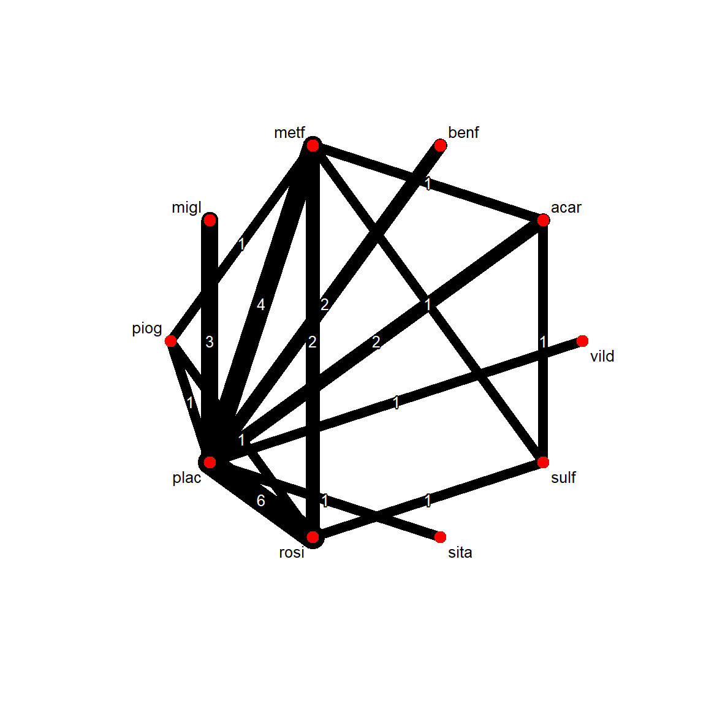

library(tidyverse)
library(netmeta)
set.seed(42)
theme_set(theme_minimal(base_size = 12))Week 4, Session 3 — Network meta-analysis
Course 3 — Biostatistics Courses
Note
Inference lab: Hypothesis → Visualise → Assumptions → Conduct → Conclude.
Learning objectives
- Fit a network meta-analysis (NMA) using
netmeta. - Draw and read the network graph.
- Derive SUCRA rankings and interpret them cautiously.
Prerequisites
Pairwise meta-analysis (W4 S2).
Background
Network meta-analysis extends pairwise meta-analysis to more than two treatments by combining direct comparisons (from head-to-head trials) with indirect comparisons (inferred through a shared comparator). The central assumption is transitivity: the studies compared indirectly are exchangeable — no moderator distinguishes them in a way that systematically shifts the effect. The statistical analogue, consistency, checks whether direct and indirect estimates agree.
SUCRA (surface under the cumulative ranking curve) summarises each treatment’s rank distribution on a 0-1 scale, where 1 is best. SUCRA values compress a lot of uncertainty into a single number; they are useful for signalling but should be reported with interval estimates for every pairwise comparison.
Setup
1. Hypothesis
H₀: all treatments in the network have equal efficacy. H₁: at least two differ.
2. Visualise
data(Senn2013)
head(Senn2013) TE seTE treat1.long treat2.long treat1 treat2 studlab
1 -1.90 0.1414 Metformin Placebo metf plac DeFronzo1995
2 -0.82 0.0992 Metformin Placebo metf plac Lewin2007
3 -0.20 0.3579 Metformin Acarbose metf acar Willms1999
4 -1.34 0.1435 Rosiglitazone Placebo rosi plac Davidson2007
5 -1.10 0.1141 Rosiglitazone Placebo rosi plac Wolffenbuttel1999
6 -1.30 0.1268 Pioglitazone Placebo piog plac Kipnes2001net <- netmeta(TE, seTE, treat1, treat2, studlab,
data = Senn2013, sm = "MD",
common = FALSE, random = TRUE,
reference.group = "plac")netgraph(net, plastic = FALSE, thickness = "number.of.studies",
points = TRUE, cex.points = 2, cex = 0.8)
3. Assumptions
decomp.design(net)Q statistics to assess homogeneity / consistency
Q df p-value
Total 96.99 18 < 0.0001
Within designs 74.46 11 < 0.0001
Between designs 22.53 7 0.0021
Design-specific decomposition of within-designs Q statistic
Design Q df p-value
plac:metf 42.16 2 < 0.0001
plac:rosi 21.27 5 0.0007
plac:benf 4.38 1 0.0363
plac:migl 6.45 2 0.0398
metf:rosi 0.19 1 0.6655
Between-designs Q statistic after detaching of single designs
(influential designs have p-value markedly different from 0.0021)
Detached design Q df p-value
rosi:sulf 6.77 6 0.3425
metf:sulf 7.51 6 0.2760
plac:rosi 16.29 6 0.0123
metf:piog 17.13 6 0.0088
plac:piog 17.25 6 0.0084
plac:metf 22.07 6 0.0012
plac:acar 22.44 6 0.0010
piog:rosi 22.48 6 0.0010
acar:sulf 22.52 6 0.0010
metf:rosi 22.52 6 0.0010
plac:acar:metf 22.38 5 0.0004
Q statistic to assess consistency under the assumption of
a full design-by-treatment interaction random effects model
Q df p-value tau.within tau2.within
Between designs 2.19 7 0.9483 0.3797 0.1442The within-design heterogeneity and between-design inconsistency variances are the key diagnostics.
4. Conduct
summary(net)Original data (with adjusted standard errors for multi-arm studies):
treat1 treat2 TE seTE seTE.adj narms multiarm
DeFronzo1995 metf plac -1.9000 0.1414 0.3588 2
Lewin2007 metf plac -0.8200 0.0992 0.3443 2
Willms1999 acar metf 0.2000 0.3579 0.5574 3 *
Davidson2007 plac rosi 1.3400 0.1435 0.3596 2
Wolffenbuttel1999 plac rosi 1.1000 0.1141 0.3489 2
Kipnes2001 piog plac -1.3000 0.1268 0.3533 2
Kerenyi2004 plac rosi 0.7700 0.1078 0.3469 2
Hanefeld2004 metf piog -0.1600 0.0849 0.3405 2
Derosa2004 piog rosi 0.1000 0.1831 0.3772 2
Baksi2004 plac rosi 1.3000 0.1014 0.3450 2
Rosenstock2008 plac rosi 1.0900 0.2263 0.3999 2
Zhu2003 plac rosi 1.5000 0.1624 0.3675 2
Yang2003 metf rosi 0.1400 0.2239 0.3986 2
Vongthavaravat2002 rosi sulf -1.2000 0.1436 0.3596 2
Oyama2008 acar sulf -0.4000 0.1549 0.3643 2
Costa1997 acar plac -0.8000 0.1432 0.3595 2
Hermansen2007 plac sita 0.5700 0.1291 0.3541 2
Garber2008 plac vild 0.7000 0.1273 0.3534 2
Alex1998 metf sulf -0.3700 0.1184 0.3503 2
Johnston1994 migl plac -0.7400 0.1839 0.3775 2
Johnston1998a migl plac -1.4100 0.2235 0.3983 2
Kim2007 metf rosi -0.0000 0.2339 0.4043 2
Johnston1998b migl plac -0.6800 0.2828 0.4344 2
Gonzalez-Ortiz2004 metf plac -0.4000 0.4356 0.5463 2
Stucci1996 benf plac -0.2300 0.3467 0.4785 2
Moulin2006 benf plac -1.0100 0.1366 0.3569 2
Willms1999 metf plac -1.2000 0.3758 0.5802 3 *
Willms1999 acar plac -1.0000 0.4669 0.8122 3 *
Number of treatment arms per study (by decreasing number of arms):
narms multiarm
Willms1999 3 *
DeFronzo1995 2
Lewin2007 2
Davidson2007 2
Wolffenbuttel1999 2
Kipnes2001 2
Kerenyi2004 2
Hanefeld2004 2
Derosa2004 2
Baksi2004 2
Rosenstock2008 2
Zhu2003 2
Yang2003 2
Vongthavaravat2002 2
Oyama2008 2
Costa1997 2
Hermansen2007 2
Garber2008 2
Alex1998 2
Johnston1994 2
Johnston1998a 2
Kim2007 2
Johnston1998b 2
Gonzalez-Ortiz2004 2
Stucci1996 2
Moulin2006 2
Results (random effects model):
treat1 treat2 MD 95%-CI
DeFronzo1995 metf plac -1.1268 [-1.4291; -0.8244]
Lewin2007 metf plac -1.1268 [-1.4291; -0.8244]
Willms1999 acar metf 0.2850 [-0.2208; 0.7908]
Davidson2007 plac rosi 1.2335 [ 0.9830; 1.4839]
Wolffenbuttel1999 plac rosi 1.2335 [ 0.9830; 1.4839]
Kipnes2001 piog plac -1.1291 [-1.5596; -0.6986]
Kerenyi2004 plac rosi 1.2335 [ 0.9830; 1.4839]
Hanefeld2004 metf piog 0.0023 [-0.4398; 0.4444]
Derosa2004 piog rosi 0.1044 [-0.3347; 0.5435]
Baksi2004 plac rosi 1.2335 [ 0.9830; 1.4839]
Rosenstock2008 plac rosi 1.2335 [ 0.9830; 1.4839]
Zhu2003 plac rosi 1.2335 [ 0.9830; 1.4839]
Yang2003 metf rosi 0.1067 [-0.2170; 0.4304]
Vongthavaravat2002 rosi sulf -0.8169 [-1.2817; -0.3521]
Oyama2008 acar sulf -0.4252 [-0.9456; 0.0951]
Costa1997 acar plac -0.8418 [-1.3236; -0.3600]
Hermansen2007 plac sita 0.5700 [-0.1240; 1.2640]
Garber2008 plac vild 0.7000 [ 0.0073; 1.3927]
Alex1998 metf sulf -0.7102 [-1.1713; -0.2491]
Johnston1994 migl plac -0.9497 [-1.4040; -0.4955]
Johnston1998a migl plac -0.9497 [-1.4040; -0.4955]
Kim2007 metf rosi 0.1067 [-0.2170; 0.4304]
Johnston1998b migl plac -0.9497 [-1.4040; -0.4955]
Gonzalez-Ortiz2004 metf plac -1.1268 [-1.4291; -0.8244]
Stucci1996 benf plac -0.7311 [-1.2918; -0.1705]
Moulin2006 benf plac -0.7311 [-1.2918; -0.1705]
Willms1999 metf plac -1.1268 [-1.4291; -0.8244]
Willms1999 acar plac -0.8418 [-1.3236; -0.3600]
Number of studies: k = 26
Number of pairwise comparisons: m = 28
Number of treatments: n = 10
Number of designs: d = 15
Random effects model
Treatment estimate (other treatments vs 'plac'):
MD 95%-CI z p-value
acar -0.8418 [-1.3236; -0.3600] -3.42 0.0006
benf -0.7311 [-1.2918; -0.1705] -2.56 0.0106
metf -1.1268 [-1.4291; -0.8244] -7.30 < 0.0001
migl -0.9497 [-1.4040; -0.4955] -4.10 < 0.0001
piog -1.1291 [-1.5596; -0.6986] -5.14 < 0.0001
plac . . . .
rosi -1.2335 [-1.4839; -0.9830] -9.65 < 0.0001
sita -0.5700 [-1.2640; 0.1240] -1.61 0.1075
sulf -0.4166 [-0.8887; 0.0556] -1.73 0.0838
vild -0.7000 [-1.3927; -0.0073] -1.98 0.0476
Quantifying heterogeneity / inconsistency:
tau^2 = 0.1087; tau = 0.3297; I^2 = 81.4% [72.0%; 87.7%]
Tests of heterogeneity (within designs) and inconsistency (between designs):
Q d.f. p-value
Total 96.99 18 < 0.0001
Within designs 74.46 11 < 0.0001
Between designs 22.53 7 0.0021
Details of network meta-analysis methods:
- Frequentist graph-theoretical approach
- DerSimonian-Laird estimator for tau^2
- Calculation of I^2 based on Qrank_df <- netrank(net, small.values = "good")
rank_df P-score
rosi 0.8934
metf 0.7818
piog 0.7746
migl 0.6137
acar 0.5203
benf 0.4358
vild 0.4232
sita 0.3331
sulf 0.2103
plac 0.01395. Concluding statement
In a network meta-analysis of 10 treatments across 26 studies (28 pairwise comparisons), the treatment with the highest SUCRA for HbA1c lowering was rosi (SUCRA = 0.89). SUCRA rankings should be interpreted alongside the pairwise effect estimates and their intervals, not as a standalone conclusion.
Remind the audience that SUCRA rankings are heavily influenced by studies with sparse networks and that “best on SUCRA” is not the same as “best by pairwise CI”.
Common pitfalls
- Treating SUCRA as if it were the effect size.
- Ignoring the transitivity assumption because the output compiled.
- Mixing direct and indirect evidence without quantifying inconsistency.
Further reading
- Rücker G, Schwarzer G. (2015). Ranking treatments in frequentist network meta-analysis.
- Salanti G. (2012). Indirect and mixed-treatment comparison…
Session info
sessionInfo()R version 4.5.2 (2025-10-31 ucrt)
Platform: x86_64-w64-mingw32/x64
Running under: Windows 11 x64 (build 26200)
Matrix products: default
LAPACK version 3.12.1
locale:
[1] LC_COLLATE=English_Germany.utf8 LC_CTYPE=English_Germany.utf8
[3] LC_MONETARY=English_Germany.utf8 LC_NUMERIC=C
[5] LC_TIME=English_Germany.utf8
time zone: Europe/Berlin
tzcode source: internal
attached base packages:
[1] stats graphics grDevices utils datasets methods base
other attached packages:
[1] netmeta_3.4-0 meta_8.3-0 metadat_1.6-0 metabook_0.2-0
[5] lubridate_1.9.5 forcats_1.0.1 stringr_1.6.0 dplyr_1.2.0
[9] purrr_1.2.2 readr_2.2.0 tidyr_1.3.2 tibble_3.3.1
[13] ggplot2_4.0.3 tidyverse_2.0.0
loaded via a namespace (and not attached):
[1] gtable_0.3.6 xfun_0.57 htmlwidgets_1.6.4
[4] CompQuadForm_1.4.4 lattice_0.22-9 mathjaxr_2.0-0
[7] tzdb_0.5.0 numDeriv_2016.8-1.1 vctrs_0.7.3
[10] tools_4.5.2 Rdpack_2.6.6 generics_0.1.4
[13] rgl_1.3.36 pkgconfig_2.0.3 Matrix_1.7-5
[16] RColorBrewer_1.1-3 S7_0.2.2 lifecycle_1.0.5
[19] compiler_4.5.2 farver_2.1.2 htmltools_0.5.9
[22] yaml_2.3.12 pillar_1.11.1 nloptr_2.2.1
[25] MASS_7.3-65 reformulas_0.4.4 abind_1.4-8
[28] boot_1.3-32 nlme_3.1-169 tidyselect_1.2.1
[31] digest_0.6.39 mvtnorm_1.3-7 stringi_1.8.7
[34] splines_4.5.2 magic_1.6-1 fastmap_1.2.0
[37] grid_4.5.2 colorspace_2.1-2 cli_3.6.6
[40] metafor_5.0-1 magrittr_2.0.4 base64enc_0.1-6
[43] withr_3.0.2 scales_1.4.0 timechange_0.4.0
[46] rmarkdown_2.31 igraph_2.3.0 otel_0.2.0
[49] lme4_2.0-1 hms_1.1.4 evaluate_1.0.5
[52] knitr_1.51 rbibutils_2.4.1 rlang_1.2.0
[55] Rcpp_1.1.1-1.1 glue_1.8.0 xml2_1.5.2
[58] minqa_1.2.8 jsonlite_2.0.0 R6_2.6.1